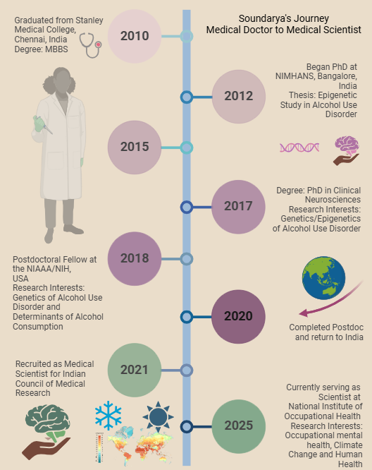

Timeline of my education and employment

2003-2010
Stanley Medical College | Chennai, India | MBBS
I graduated my Bachelor of Medicine and Bachelor of Surgery (MBBS) in 2010. While preparing for my MD entrance exams, I decided not to follow the herd and thus I embarked on my research journey.
2012-2017
NIMHANS | Bangalore, India | PhD in Clinical Neurosciences
As a PhD student (ICMR MD-PHD fellowship) under the supervision of Dr. Pratima Murthy M.D (Psychiatry), at National Institute of Mental Health and Neuro Sciences (NIMHANS), Bangalore, I worked in the capacity of a Junior Resident (for three years) and a Senior Resident (for two years) in the Department of Clinical Neurosciences. I was associated with the Centre for Addiction Medicine, NIMHANS which is the Regional Centre for South India. I specialized in Substance Use Disorders with a special focus in Alcohol Use Disorder. I also got trained in Genetics and Epigenetics of Alcohol Use Disorder in the Molecular Genetics Laboratory at the Neurobiology Research Centre, NIMHANS. I aimed at examining epigenetic changes in alcohol and one carbon metabolism genes in the context of nutritional changes and treatment outcome in a prospective cohort study. By adopting a longitudinal approach, I investigated the potential methylation changes in the regions of interest.
2018-2020
NIAAA/NIH | PostDoc | 2018 - 2020
This was a particularly notable and enriching experience of my life. As a postdoctoral fellow at the National Institute on Alcohol Abuse and Alcoholism (NIAAA) / National Institutes of Health (NIH), USA from 2018-2020, I worked in the capacity of an Assistant Investigator in the protocols of my section at Human Psychopharmacology, NIAAA/NIH under the supervision of Dr. Vijay Ramchandani, Ph.D. At the lab, we conducted research on human subjects administering intravenous alcohol infusions along with post-baccalaureate candidates in my section. I was involved in writing and conducting protocols, grants, authored manuscripts in a collaborative environment. At the NIH, I was trained at multiple domains, including Responsible Conduct of Research, online technology transfer, data quality management, writing research papers, On becoming a responsible researcher, and also on workplace management. I worked on multiple data projects, maintaining data in a safe and secured manner, involved in developing analysis pipelines for quantitative data analyses. I also mentored post-baccalaureate in data analysis, management and visualization techniques and also writing analysis reports, abstracts for conferences and manuscripts. While doing so, I developed much interest in the concept of “Reproducible Research”. I learnt and strengthened my analytical skills specifically in “R” platform to generate reproducible analyses. This motivated me to be an advocate for Open Science and Reproducible Research.
2020-2021
I returned from the USA in the midst of the pandemic. This was a difficult time professionally. Yet, I made the best use of my time by diving into RoamResearch and set of courses that strengthened my grantsmanship, writing and analytical skills.
2021 - Present
ICMR-NIOH | Medical Scientist
Currently I serve as a medical scientist. As aligned with the institute’s mission, I focus on occupational health, particularly occupational mental health.
My lifetime vision
To administer effective workplace interventions to combat occupational stress associated and driven substance use disorders.
To be an advocate of Open Science.
Ten year goals
To develop a comprehensive toolkit for assessing occupational mental health in the Indian context.
To understand how occupational stress and associated factors contribute to substance use vulnerability and continuation.
To test and develop various workplace interventions to combat occupational stress and substance use problems.
Develop human resources and spark interest in responsible and reproducible research